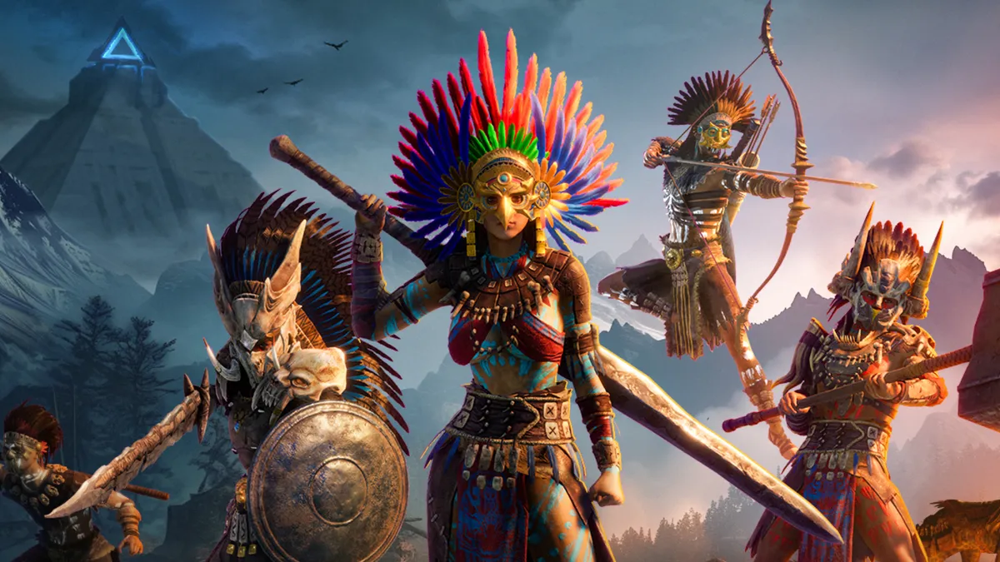

Home
Gstorys
About Us
SignUp
DGLNews
GNews
1 / 3
Ghost of Tsushima Is Another Solid, Slightly Unambitious, PlayStation PC Port
read more
2 / 3
NFS Mobile Announcement Trailer Reveals Gameplay, Hints at Upcoming Beta and More Details
read more
3 / 3

The latest overnight survival game fixation blends a Mesoamerican theme,Bionicle masks
read more